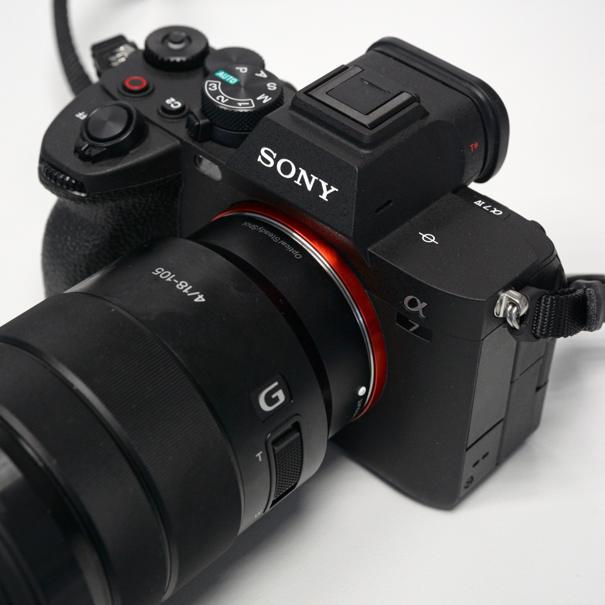
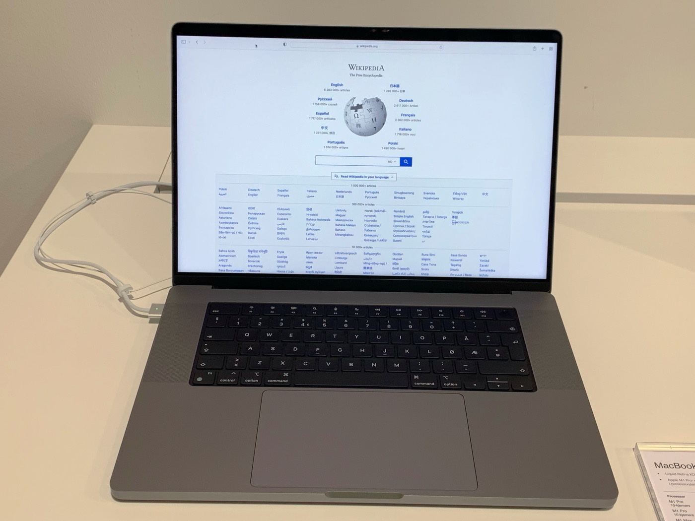
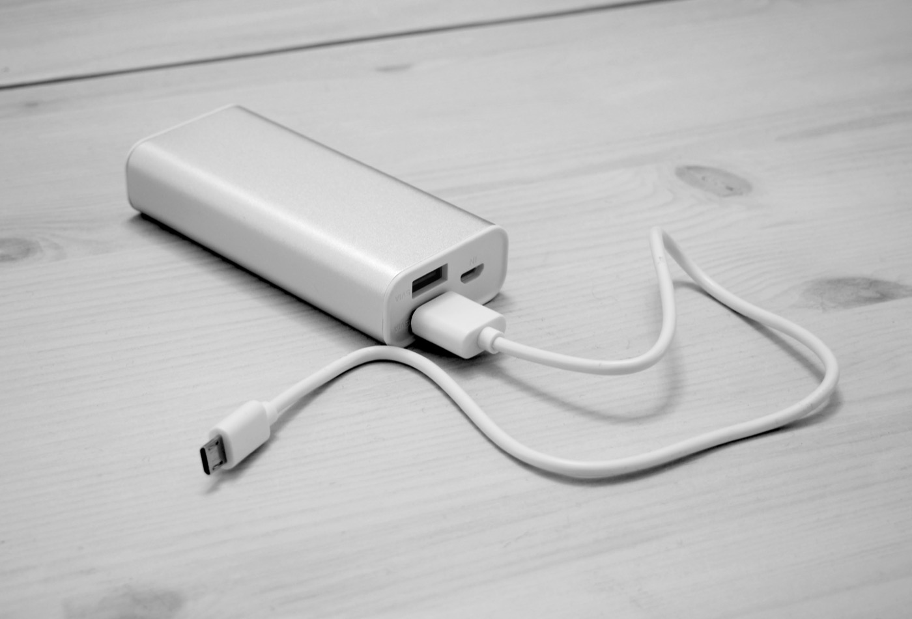

After years of trial, error, and a few expensive mistakes, my travel kit has finally settled into something I genuinely trust. This isn't a wish list or a spec-sheet roundup — it's the exact gear that goes with me on every trip, from a weekend in the desert to a two-week shoot overseas. Below is what's in the bag right now, why each piece earns its place, and — more importantly — how it might fit into your life on the road.
Heads up: this post contains affiliate links. If you buy through them I may earn a small commission at no extra cost to you — and I only recommend gear I actually travel with. See my full disclosure.
The Bag: tomtoc Travel Backpack 28L
Everything starts with the bag, because the bag decides how you travel. I carry the tomtoc Travel Backpack 28L, and it quietly changed my whole approach: I don't check luggage anymore. I walk off the plane and straight out of the airport while everyone else is standing at baggage claim.
The 28-liter size is the magic number — big enough to pack a week of clothes plus a full camera and laptop setup, small enough to count as a personal item and slide under the seat in front of you. It's TSA-friendly and flight-approved, so it opens flat like a suitcase at security and your laptop never has to come out. The exterior is water-resistant, which has saved my gear more than once in a surprise downpour and on a very splashy boat ride, and the 16-inch laptop compartment is padded enough that I stopped worrying about it.
What sells me, though, is the profile. It reads as clean and professional, not like a bulging tourist backpack — so I can roll from an airport to a client meeting to a hostel without looking out of place. If you've ever wanted the freedom to sprint to a connection with everything on your back, this is the bag that makes one-bag travel actually livable.
The Camera: Sony A7 IV
My camera is the Sony A7 IV, and it's the single piece of gear that most changed the quality of what I bring home. It's a 33-megapixel full-frame hybrid, which is a fancy way of saying it shoots stunning stills and gorgeous 4K video from one body — so I'm not lugging a separate photo camera and video camera anymore. One tool, both jobs.

The Sony A7 IV with a versatile 24–105mm zoom — the one body that covers stills and 4K video.
The autofocus is the quiet superpower. Sony's real-time Eye AF locks onto a face (or an animal) and simply doesn't let go, which is a game-changer if you travel solo: I can set the camera down, step into the frame, and trust it to keep me sharp. In low light — a blue-hour skyline, a dim ramen bar, a field of stars — the full-frame sensor pulls in detail my old gear would have smeared into noise.
If you're leveling up from a phone or an aging DSLR, this is the camera that makes your memories look cinematic instead of just documented. It's an investment, but it's the kind you grow into for years — and if you're building a brand or a portfolio, it pays for itself.
The Laptop: MacBook (My M1 Pro, Still Going Strong)
The road is my office and my editing studio, and my MacBook Pro — an M1 model I bought a few years ago — is what makes that possible. I've culled a full photo shoot on a train, color-graded 4K clips in a beachside cafe, and answered a day of work from an airport gate, all on a single charge. Years in, the M1 chip still chews through Lightroom and Premiere without the fans ever screaming, and the machine stays cool and silent while it does it.

My M1 MacBook Pro — years old and still an effortless mobile editing studio.
The battery is the unsung hero: genuine all-day life means I can work a whole long-haul flight plus the layover and still land with charge to spare. It's light enough that I forget it's in the bag until I need it, and tough enough to live the nomad life. It hasn't given me a single reason to upgrade — which is the real testament.
Here's the thing, though: you don't need my exact (now older) Pro to get this experience. If you want something new and affordable today, the current Apple MacBook (13-inch) is the value pick I'd point a friend to — the same effortless Apple Silicon speed, all-day battery, and macOS editing chops, for a lot less than a Pro. It's the perfect first "work-from-anywhere" machine for a founder, freelancer, student, or creator.
Stay Powered: My Everyday Power Bank
A dead phone in a foreign city — map gone, boarding pass gone, camera backup gone — is the fastest way to ruin a good day, and it's completely preventable. A portable power bank lives in my daypack on every single outing, and it's the cheapest upgrade to travel peace of mind I know.

A pocket power bank — the cheapest upgrade to travel peace of mind there is.
On a full day out — shooting from sunrise, navigating by phone, filming clips — my devices would be dead by mid-afternoon without it. Instead I top up the phone, the camera, and the earbuds on the move and never think about outlets. Airport gate with every plug taken? Doesn't matter. Twelve-hour Road to Hana day? Covered. It's insurance you'll use every trip.
Hydration: Yeti Rambler 26oz
It sounds like the least exciting item on this list, and it's one of the most used. The Yeti Rambler 26oz keeps water ice-cold for around 24 hours, which is not a gimmick when you're hiking Red Rock in triple-digit heat or crossing Maui at midday — cold water three hours into a trail feels like a small miracle.
The 26-ounce size carries enough to actually get you between refills, and the bottle is genuinely indestructible — mine has been dropped on rock, kicked across a hotel floor, and clipped to the outside of my bag for a year without complaint. Practically, it pays for itself: I fill it up at the fountain past airport security instead of buying $5 plastic bottles, and I stop leaving a trail of single-use plastic behind me. One bottle for the hike, the flight, and the hotel gym.
Check the current price of the Yeti Rambler 26oz on Amazon →
How It All Works Together
The real point isn't any single item — it's the system. The Sony, the MacBook, the power bank, and the Yeti all disappear into the tomtoc, and that one bag goes under the seat. I shoot all day powered by the bank, edit and upload on the MacBook that night, stay hydrated from the Yeti throughout, and never touch a baggage carousel. Nothing is redundant, nothing is dead weight, and every piece pulls double duty. Build a kit like this once and every trip afterward gets lighter, faster, and less stressful.
Curious how this kit performs in the field? See it in action on the Road to Hana in Maui and across Tokyo and Kyoto.
Travel Gear FAQ
What camera should I travel with in 2026?
The Sony A7 IV — a 33MP full-frame hybrid that nails both stills and 4K video from one body, with autofocus good enough to make solo filming easy. It replaces carrying two cameras.
What's the best carry-on travel backpack?
The tomtoc Travel Backpack 28L: TSA-friendly, flight-approved, opens flat, fits under the seat as a personal item, water-resistant, and holds a 16-inch laptop — enough for a week of one-bag travel.
Is the M1 MacBook Pro still worth it?
Yes. It still edits photos and 4K video smoothly, runs silent and cool, and gets all-day battery — and it's now a strong value pick versus the newest models.
The best travel gear disappears into the background — you stop thinking about it and start thinking about where you are. Build the kit once, and every trip after gets easier.
Image credits: Sony A7 IV by Macflies (CC BY-SA 4.0); MacBook Pro by Premeditated (CC BY-SA 4.0); power bank by Santeri Viinamäki (CC BY-SA 4.0). Product photos are representative; cropped and resized from the originals.